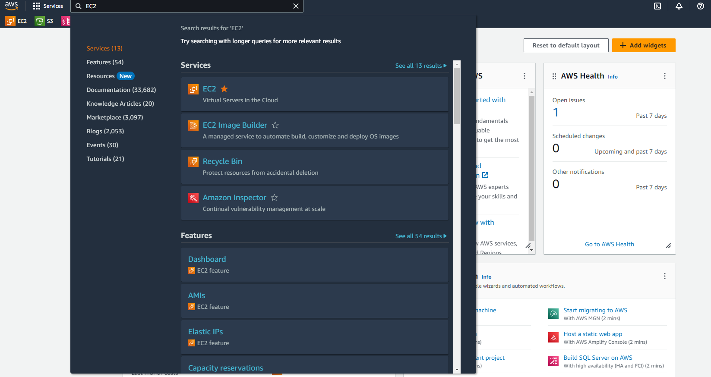
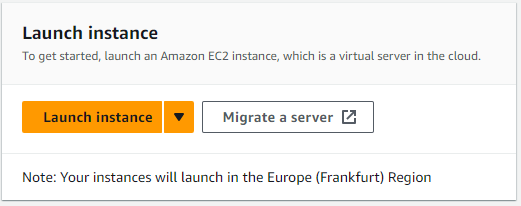
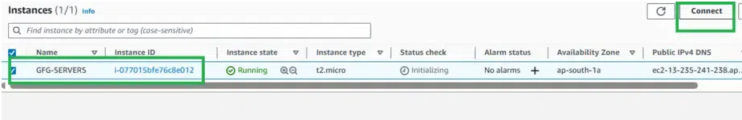

Amazon EC2 (Elastic Compute Cloud)
Amazon Elastic Compute Cloud (EC2) is a web service offered by Amazon Web Services (AWS) that provides resizable compute capacity in the cloud. In simpler terms, it allows you to create and manage virtual servers, known as instances, on-demand. Amazon EC2 is a scalable and flexible cloud computing service that enables users to launch and manage virtual servers, known as EC2 instances, in the AWS cloud. These instances can be used to run applications, host websites, and perform a wide range of computing tasks.
Key features of EC2 include:
Key features of EC2 include:
- Scalability: Users can easily scale the number of instances up or down based on workload demands. This makes it suitable for both small applications and large-scale, high-performance computing tasks.
- Variety of Instance Types: EC2 offers a wide range of instance types optimized for various use cases, from general-purpose instances to instances with high computational power and GPU capabilities.
- Choice of Operating Systems: Users can choose from a variety of operating systems, including Linux and Windows, and have full control over the configuration of their instances.
- Security: EC2 provides security groups and network access control lists to control inbound and outbound traffic to instances. Users can also configure Virtual Private Cloud (VPC) for network isolation.
- Elastic Load Balancing: EC2 instances can be paired with Elastic Load Balancing to distribute incoming traffic across multiple instances, enhancing availability and fault tolerance.
- Data Storage Options: AWS offers various storage options like Amazon EBS (Elastic Block Store) and instance store to meet different storage requirements.
- Auto Scaling: Users can configure Auto Scaling to automatically adjust the number of instances in response to changes in load, ensuring optimal performance and cost efficiency.
- AMI (Amazon Machine Image): Users can create customized AMIs with pre-configured software and settings, making it easier to launch new instances with specific configurations.
- Integration: EC2 can be integrated with other AWS services like RDS (Relational Database Service), S3 (Simple Storage Service), and more to build comprehensive cloud-based solutions.
- Pay-as-You-Go Pricing: Users are billed based on the actual compute capacity they use, and they can choose from various pricing models, including on-demand, reserved, and spot instances.
Amazon EC2 is a fundamental building block of AWS and is widely used for a wide range of applications, from web hosting and development environments to scientific computing and data analytics. It provides the flexibility and control needed to deploy virtually any application in the cloud.
AWS-EC2 configuration
- Create or login in to AWS Console:
- Go to the AWS Management Console.
- Visit the AWS Registration Page:
- Go to the AWS website.
- Click on the "Create an AWS Account" button.
- Provide Your Account Information:
- Enter your email address and create a secure password for your AWS account.
- Choose a unique AWS account name.
- Provide your contact information, including your name and phone number.
- Verify Your Identity:
- Verify your identity by providing a valid phone number. You'll receive a verification code via SMS or voice call.
- Enter the verification code to proceed.
- Choose a Support Plan:
- Choose a support plan based on your needs. You can select the free basic support plan or a premium plan with additional features (for a starter, free version works perfectly).
- Review and accept the AWS Customer Agreement and AWS Service Terms.
- Payment Information:
- Provide your payment information, including credit card details. AWS may charge a small amount to verify your card. For a free plan, you will not be charge until unless you exceeds the limits of that particular AWS service (for charges, you can visit official AWS website AWS Free Tier )
- Identity Verification:
- As part of security verification, you may be asked to provide a scanned copy of your ID for further validation.
- Set Up Multi-Factor Authentication (MFA) (Recommended):
- Enable MFA for added security by configuring it using a smartphone app or a hardware device. In my case, I used the google authenticator (you can find it in your andorid playstore or ios play store).
- Complete Registration:
- Review your information and confirm your registration.
- You will receive a confirmation email from AWS once the registration process is complete.
- Once, the login is done, sign in with your AWS account credentials.
- Choose Region:
- Select the region where you want to launch your EC2 instance. Choose a region that's geographically close to your target audience for lower latency.
- Navigate to EC2 Dashboard:
- In the AWS Management Console, search for "EC2" in the services search bar, and click on "EC2" to access the EC2 Dashboard.
 - Launch an Instance:
- Click the "Instances" link on the left navigation pane.
- Click the "Launch Instances" button. 
- Give a unique "Name and tags"
- Next you need to go to "Application and OS Images (Amazon Machine Image)" section. For more infromation on AMI, check the
official aws document section.
AWS offers a set of AMIs for OSes, including the following:
- Amazon Linux
- Ubuntu
- Apple macOS
- Red Hat Enterprise Linux
- Microsoft Windows
AWS Marketplace allows external vendors to publish their own AMIs and make them available to AWS customers.
- In the "Application and OS Images (Amazon Machine Image)", section choose either of the operating systems as per your requirement. In my case, I choose 'Amazon Linux'. Normally, I prefer Ubuntu or Amazon linux as they contains all the required software configuration.
- Next choose from the "Instance type" as per your requirements. In the case of real-time dataset streaming, you may need higher configuration. In my case, I choose 't2.large' (2 CPU, and 8GB ram which has a minimal charges per hours).
- Now, create a key-value pair, by clicking on “Create new key pair”. A window will pop up for creating key pair as shown below. The key value
pair plays a major role while connecting to the EC2-Instance it will act as an SSH-Key to connect to the instance.
Create Key-PairEnter name>>Select “.pem” and create. Automatically key pair which was created will be downloaded. Select the created key pair.

Save this file as 'your-key.pem' at a secret place and it should not be saved. This is used to connect the ec2 instance with the docker and other tools.
- In the network setting, I choose ssh, https and http traffic.
- For the current project, I choose 100 GB. However a Free tier eligible can get up to 30 GB of EBS Storage
- Keep other settings as it is and click "Launch Instance". It will create the instance, where we first need to install the Docker image, containg all the necessary dependencies. 
- Now we need to connect to this instance. To do this, click the created instance and then find the "connect" button at top right corner.
- Ways to Connect to an AWS EC2 Instance: Here you will get multiple way to connect with the created instance.
- SSH: You can use SSH to connect to your EC2 instance from a terminal. To do this, you will need the public IP address of your EC2 instance and the SSH key pair that you created when you launched the instance.
- You need to go to the directory, where 'your-key.pem' is saved.
- You need to find the public IPv4 DNS to connect with the instance from the local directory.
- A public instance's IPv4 DNS (Domain Name System) name typically follows the format "ec2-instance-id.region.compute.amazonaws.com."
Here's an example of a public IPv4 DNS for an EC2 instance:
ec2-1-23456789abcdef0.region.compute.amazonaws.com - The connection is made from your local terminal or command prompt/terminal using a command like:
ssh -i /path/to/your-key.pem ec2-user@your-instance-public-ip - You replace `/path/to/your-key.pem` with the path to your private key and ec2-user with the appropriate username for your instance.
- After you pressed the enter key, it will show a message: Amazon Linux 2023.
- It is noted that sometimes, you may need to provide reading and execution of the private-key.pem via (in linux or a mac OS):
chmod 400 private-key.pem
- AWS Console: You can also connect to your EC2 instance from the AWS Console. To do this, go to the EC2 service page and select the instance that you want to connect to. Then, click on the "Connect" button.
- Remote Desktop: If you have a Windows computer, you can use Remote Desktop to connect to your EC2 instance. To do this, you will need the public IP address of your EC2 instance and the username and password that you created when you launched the instance.
ec2-user@ip-private-IPhere 'private-IP' is the private IP of the machine provided at aws cloud. Now you are inside the ec2 instance and you can do multiple things like checking existing files (ls - la) or creating a directory (mkdir directory-name) etc.
sudo yum update -yNext we need to install the docker.
sudo yum install docker Next we need to install docket composer (for more details, you can look at docker compose install at various platform at Official website) via:
sudo curl -L "https://github.com/docker/compose/releases/download/1.29.1/docker-compose-$(uname -s)-$(uname -m)" -o /usr/local/bin/docker-compose
Note: Docker Compose is a tool for defining and running multi-container Docker applications. It allows you to define complex applications, their services, networks, and volumes in a single file, making it easier to manage and run multiple Docker containers as a single unit.
Creating a user: adding the current user to the "docker" group to allow them to run Docker commands without sudo.
sudo gpasswd -a $USER dockerNext activating the group membership changes immediately without requiring you to log out and log back in.
newgrp dockersudo apt updateNext to upgrade it using:
sudo apt upgradeInstall Required Packages: Install the packages that allow you to install software over HTTPS and manage repositories:
sudo apt install apt-transport-https ca-certificates curl software-properties-commonAdd Docker Repository: Add the official Docker repository to your system:
curl -fsSL https://download.docker.com/linux/ubuntu/gpg | sudo gpg --dearmor -o /usr/share/keyrings/docker-archive-keyring.gpgecho "deb [signed-by=/usr/share/keyrings/docker-archive-keyring.gpg] https://download.docker.com/linux/ubuntu $(lsb_release -cs) stable" | sudo tee /etc/apt/sources.list.d/docker.list > /dev/nullInstall Docker:Update the package list again and then install Docker:
sudo apt update
sudo apt install docker-ce
Start and Enable Docker: Start the Docker service and enable it to start on boot:
sudo systemctl start docker
sudo systemctl enable docker
Verify Docker Installation: Check that Docker is installed and running:
sudo docker --versionCreating a User Account:
- Create a New User:
sudo adduser 'username'give a User name in place of 'username'
sudo usermod -aG docker 'username'scp -r -i secret-key.pem docker-exp ec2-user@Your-own-Public-IPv4-DNS-of-your-instance.compute.amazonaws.com:/home/ec2-user/docker_expfor more details on this, please check the Docker configuration page.
Here my docker-compoase file is kept inside docker-exp folder in my local direactory. This command will copy this folder to ec2 machine and save it as a docker_exp folder.
We need to keep in mind that before copying the docker_exp folder to ec2 machine, we need to go to that directory in your terminal via "cd /go to directory" and then use the copy command to copy it to ec2 machine.
docker-compose up